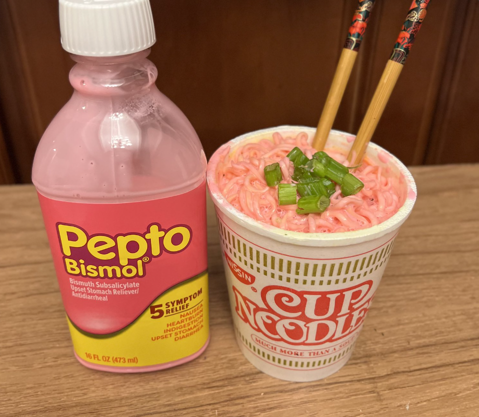

Pepto Bismol Ramen Noodles

Pepto Bismol Ramen Noodles offer a unique blend of flavors.
The subtle tanginess of Pepto Bismol enhances the umami goodness of the noodles, creating a surprisingly harmonious and surprisingly addictive taste experience.
Ingredients
Steps
- Boil the Ramen Noodles.
- Pour Pepto Bismol over the cooked ramen noodles.
- Mix the noodles with the Pepto Bismol until coated.
- Let it sit for a few minutes to absorb the pink color.